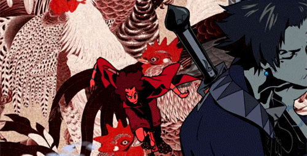

Ce este Samurai Champloo?
Samurai Champloo este un serial anime Japonez făcut de Manglobe, de o echipă condusă de regizorul Shinichirō Watanabe, designer-ul de caractere Kazuto Nakazawa și designerul mecanic Mahiro Maeda. Serialul a fost rulat din Mai 20, 2004 pentru 26 de episoade până în Martie 19, 2005.
Povestea este plasată într-o versiune fictivă a Japoniei în perioada Edo, cu un cadru anacronic, predominat de hip-hop. Narațiunea urmărește doi spadasini, Mugen și Jin, care au fost salvați de la o execuție de Fuu, o tânără chelneriță, care după i-a recrutat pentru a o acompania în misiunea sa de-a lungul Japoniei de a găsi samuraiul care miroase a floarea soarelui.
De ce trebuie să te uiti ?
Animatie bună

Lupte interesante

Muzică plăcută
Personaje harizmatice
Break dance
Sânge
Mult sânge